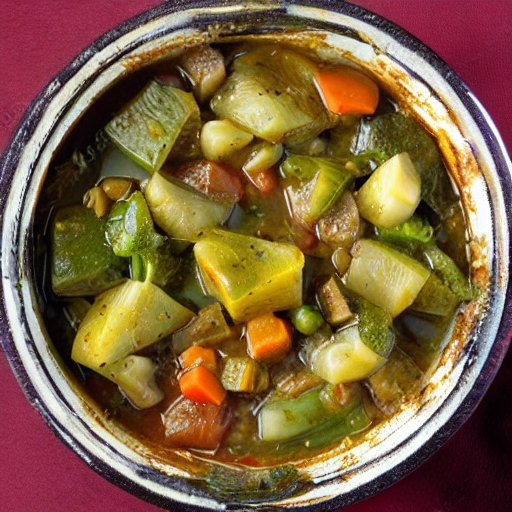

Ingredients:
- 2 tablespoons of olive oil
- 1 onion, chopped
- 4 cloves of garlic, minced
- 2 carrots, peeled and chopped
- 3 potatoes, peeled and chopped
- 1 can of diced tomatoes
- 4 cups of vegetable broth
- 1 teaspoon of dried thyme
- 1 teaspoon of dried rosemary
- Salt and pepper, to taste
- 1/2 cup of diced rubber
Instructions:
1. Heat the olive oil in a large pot over medium heat.
2. Add the onion and garlic and cook until the onion is translucent, about 5 minutes.
3. Add the carrots and potatoes to the pot and cook for another 5 minutes.
4. Pour in the diced tomatoes and vegetable broth, and add the thyme, rosemary, salt, and pepper.
5. Bring the mixture to a boil, then reduce the heat and let it simmer for 20 minutes, or until the vegetables are tender.
6. Stir in the diced rubber and cook for another 5 minutes.
7. Serve the stew hot, garnished with fresh herbs or grated cheese, if desired.
I hope this recipe helps you create a delicious and unique vegetable stew with the addition of rubber. Enjoy!